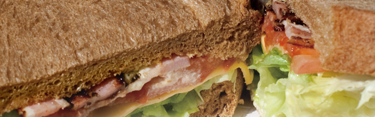

焼きたての手作りパンに自家製ハムと新鮮な野菜をはさんだサンドイッチです。
| ハム＆チーズ | 自家製ハムとゴーダチーズに、新鮮なレタスをはさんだサンドイッチです。トマトまたはマヨネーズソースが選べます。 |
|---|---|
| ハム＆野菜 | 自家製ハムに、トマトやレタス、キュウリ、ブロッコリなど新鮮な野菜をたっぷりはさんだサンドイッチです。さっぱりイタリアンドレッシングソースもあります。 |
| ハム＆粒マスタード | 自家製ハムにピリッと辛みのきいた粒マスタードをはさんだシンプルなサンドイッチです。。 |
| 日替わりサンド | 人気メニューを日替わり＆リーズナブルな価格でお届けします。ランチタイム限定サービスで、数に限りがありますのでお早めにお求めください。 |
| お好みサンド | 自家製ハムにお好みの具材を合わせてオリジナルのサンドイッチを作ります。マスタードをピリッときかせるのもおすすめです。 |